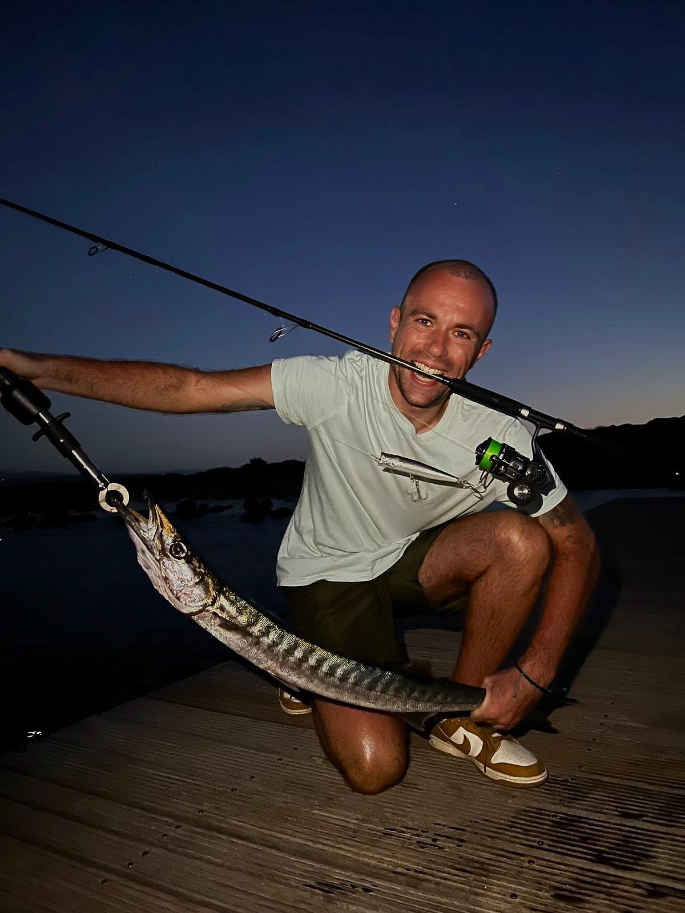
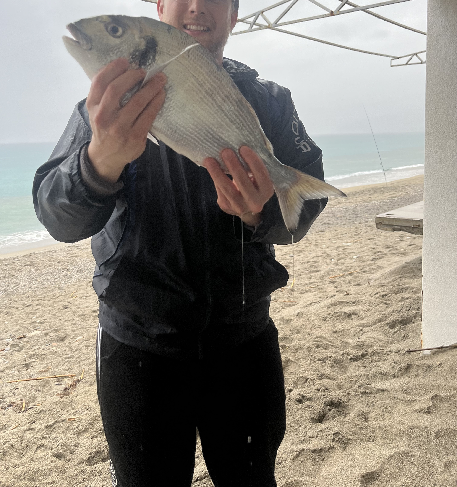

Guida di pesca in Liguria | Surfcasting, Spinning e Kayak Fishing
La pesca è più bella quando la si condivide
Ti accompagno a pescare in Liguria, dalla spiaggia e in kayak, per imparare, migliorare o semplicemente vivere una giornata autentica di pesca tra surfcasting, beach ledgering, spinning e kayak fishing.




Dove andremo a pesca insieme?
Principalmente in Liguria: scegliamo lo spot in base a meteo, mare, stagione e al tuo livello. L’obiettivo è farti vivere un’uscita bella, sicura e formativa tra Finale Ligure, Varigotti, Noli, Borgio Verezzi, Andora, Alassio e Cervo.


Tecniche di pesca
Possiamo scegliere la tecnica in base al tuo livello e alle condizioni del mare: surfcasting, beach ledgering e spinning per vivere un’esperienza di pesca in Liguria davvero su misura.
Esperienze di pesca in Liguria, dalla spiaggia e in kayak
Se stai cercando una guida di pesca in Liguria, l’idea è semplice: organizzare uscite reali, su misura, in spot scelti in base a mare, vento, stagione e livello tecnico. Le giornate possono essere dedicate al surfcasting, al beach ledgering, allo spinning oppure al kayak fishing, sempre con un approccio pratico, sicuro e concreto.
L’obiettivo non è solo portarti a pescare, ma aiutarti a leggere lo spot, capire le condizioni e vivere un’esperienza autentica tra Finale Ligure, Noli, Varigotti, Alassio e dintorni.
Il mare cambia ogni giorno. Troviamo il momento giusto insieme!
Ogni uscita va organizzata in base a vento, corrente e stagione. Se vuoi programmare la tua giornata di pesca in Liguria, scrivimi e troviamo insieme il momento giusto.
Per scrivermi, usa il pulsante WhatsApp in basso a destra. In alternativa, se preferisci chiamarmi o contattarmi via email, trovi i miei recapiti in fondo alla pagina.